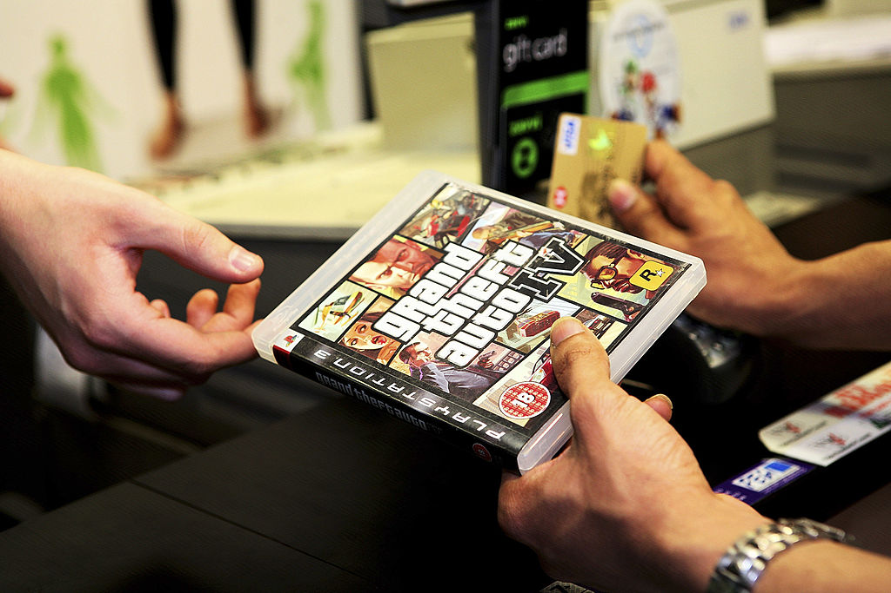
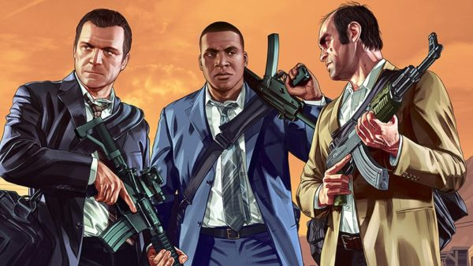
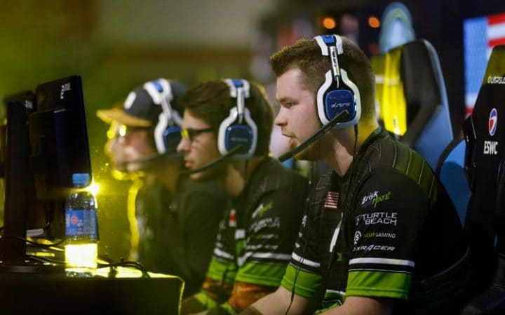

Main Page
Politics
Sports
Entertainment
Music
Microsoft Once Paid $75 Million Just To STOP 'GTA IV' From Being A Sony Exclusive:

GTA 5 SHOULD GET SPIN-OFFS BEFORE GTA 6 ARRIVES

From gaming to gambling: the rising risk of esports

30 reseason to visit italy
Next Europe destination
Africa's best national parks
Wonder woman "Best movie..